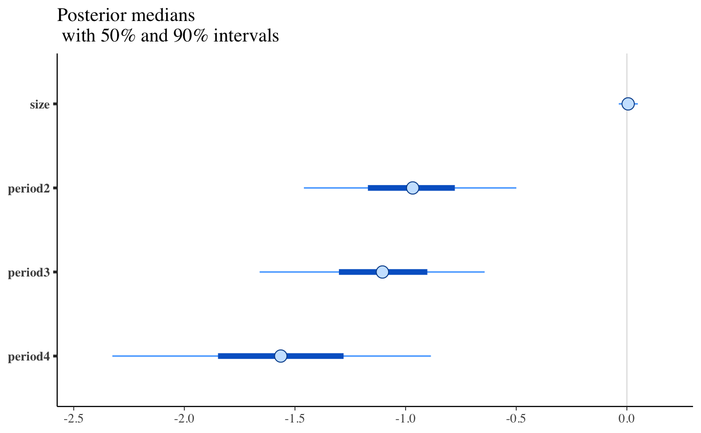
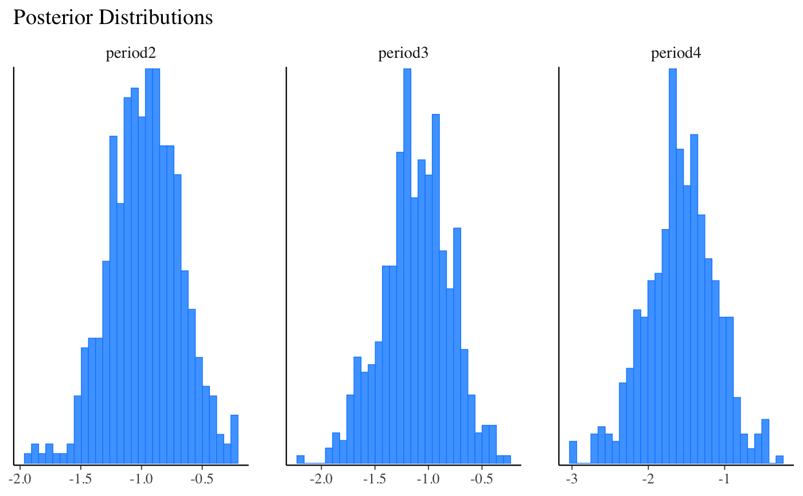
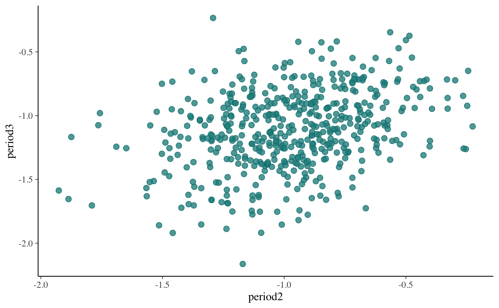
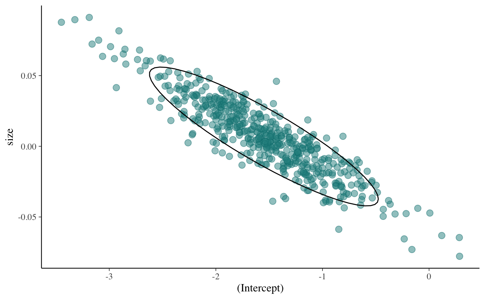
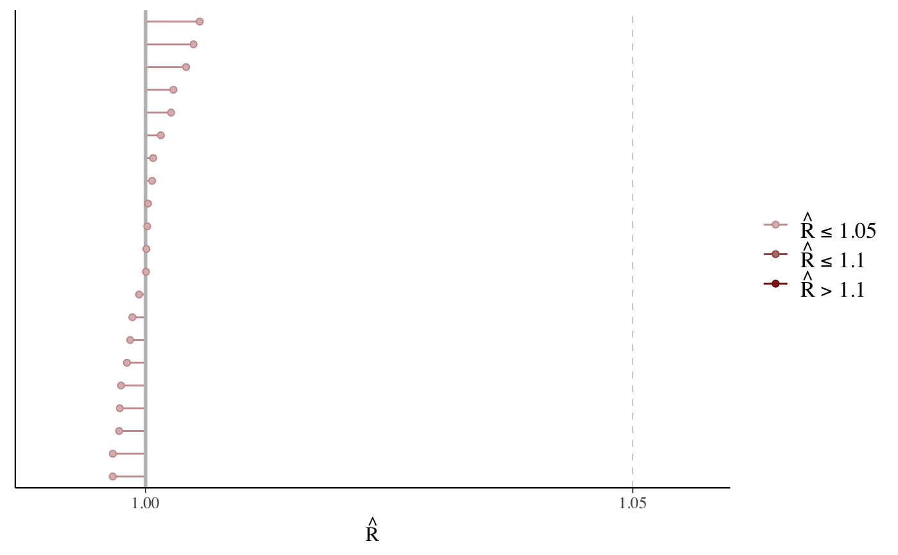
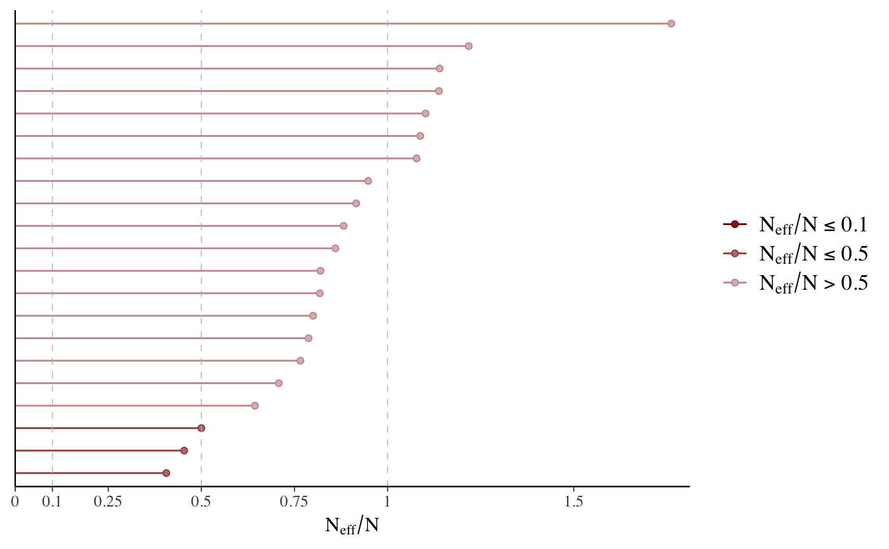
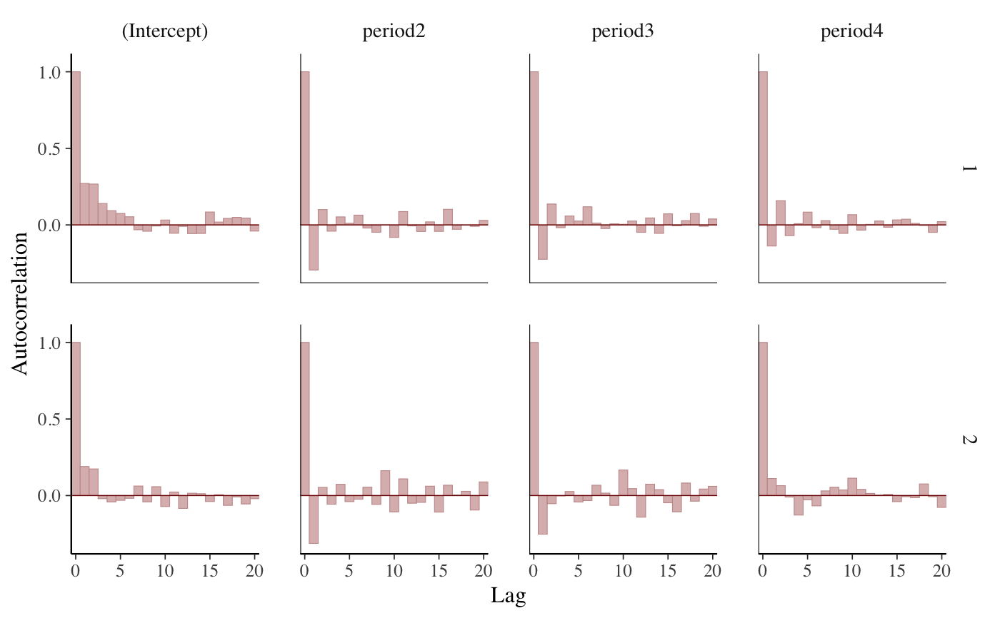
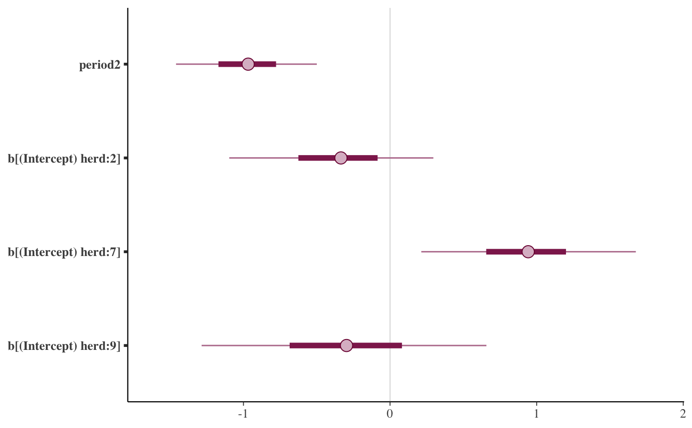
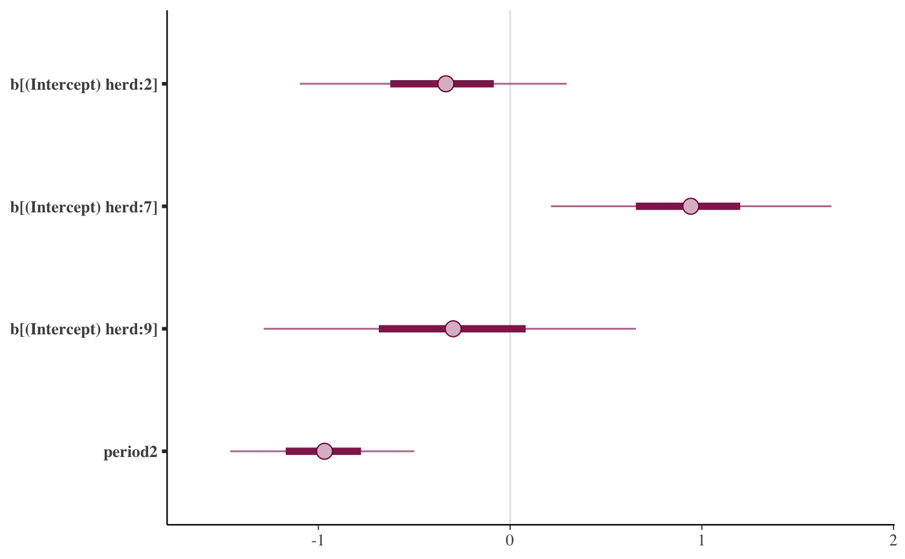

Plot method for stanreg objects
plot.stanreg.RdThe plot method for stanreg-objects provides a convenient
interface to the MCMC module in the bayesplot
package for plotting MCMC draws and diagnostics. It is also straightforward
to use the functions from the bayesplot package directly rather than
via the plot method. Examples of both methods of plotting are given
below.
# S3 method for stanreg plot(x, plotfun = "intervals", pars = NULL, regex_pars = NULL, ...)
Arguments
| x | A fitted model object returned by one of the
rstanarm modeling functions. See |
|---|---|
| plotfun | A character string naming the bayesplot
MCMC function to use. The default is to call
|
| pars | An optional character vector of parameter names. |
| regex_pars | An optional character vector of regular
expressions to use for parameter selection. |
| ... | Additional arguments to pass to |
Value
Either a ggplot object that can be further customized using the
ggplot2 package, or an object created from multiple ggplot objects
(e.g. a gtable object created by arrangeGrob).
References
Gabry, J. , Simpson, D. , Vehtari, A. , Betancourt, M. and Gelman, A. (2019), Visualization in Bayesian workflow. J. R. Stat. Soc. A, 182: 389-402. doi:10.1111/rssa.12378, (journal version, arXiv preprint, code on GitHub)
See also
The vignettes in the bayesplot package for many examples.
MCMC-overview(bayesplot) for links to the documentation for all the available plotting functions.color_scheme_set(bayesplot) to change the color scheme used for plotting.pp_checkfor graphical posterior predictive checks.plot_nonlinearfor models with nonlinear smooth functions fit usingstan_gamm4.
Examples
# \donttest{ # Use rstanarm example model if (!exists("example_model")) example(example_model) fit <- example_model ##################################### ### Intervals and point estimates ### ##################################### plot(fit) # same as plot(fit, "intervals"), plot(fit, "mcmc_intervals")p <- plot(fit, pars = "size", regex_pars = "period", prob = 0.5, prob_outer = 0.9) p + ggplot2::ggtitle("Posterior medians \n with 50% and 90% intervals")# Shaded areas under densities bayesplot::color_scheme_set("brightblue") plot(fit, "areas", regex_pars = "period", prob = 0.5, prob_outer = 0.9)# Make the same plot by extracting posterior draws and calling # bayesplot::mcmc_areas directly x <- as.array(fit, regex_pars = "period") bayesplot::mcmc_areas(x, prob = 0.5, prob_outer = 0.9)# Ridgelines version of the areas plot bayesplot::mcmc_areas_ridges(x, regex_pars = "period", prob = 0.9)################################## ### Histograms & density plots ### ################################## plot_title <- ggplot2::ggtitle("Posterior Distributions") plot(fit, "hist", regex_pars = "period") + plot_title#>#################### ### Scatterplots ### #################### bayesplot::color_scheme_set("teal") plot(fit, "scatter", pars = paste0("period", 2:3))plot(fit, "scatter", pars = c("(Intercept)", "size"), size = 3, alpha = 0.5) + ggplot2::stat_ellipse(level = 0.9)#################################################### ### Rhat, effective sample size, autocorrelation ### #################################################### bayesplot::color_scheme_set("red") # rhat plot(fit, "rhat")#>#>################## ### Traceplots ### ################## # NOTE: rstanarm doesn't store the warmup draws (to save space because they # are not so essential for diagnosing the particular models implemented in # rstanarm) so the iterations in the traceplot are post-warmup iterations bayesplot::color_scheme_set("pink") (trace <- plot(fit, "trace", pars = "(Intercept)"))# change traceplot colors to ggplot defaults or custom values trace + ggplot2::scale_color_discrete()#> #>#> #># changing facet layout plot(fit, "trace", pars = c("(Intercept)", "period2"), facet_args = list(nrow = 2))# same plot by calling bayesplot::mcmc_trace directly x <- as.array(fit, pars = c("(Intercept)", "period2")) bayesplot::mcmc_trace(x, facet_args = list(nrow = 2))# } # For graphical posterior predictive checks see # help("pp_check.stanreg")